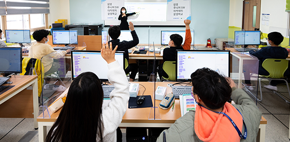

home > 사회공헌 > Enabling People
Enabling People
함께가요 미래로!
삼성SDI는 친환경 에너지 기업으로서 회사와 임직원이 가진 역량을 나누어 미래의 에너지인
아동, 청소년들이 잠재력을 발휘하고 건설적인 미래를 준비할 수 있도록 지원하고 있습니다.
사회공헌 추진 방향
삼성SDI의 CSR 비전은 삼성의 핵심가치 중 ‘인재제일’과 ‘상생 추구’를 그 근간으로 합니다.
이에 따라 사람의 잠재 역량이 최대한 발휘되도록 하는 것이 우리가 지향하는 사회 공헌의 목표입니다.
삼성SDI는 인재 육성의 경험을 살려 미래의 주역이 될 청소년들의 역량을 개발하는데 힘쓸 것입니다.
또한 우리가 쌓아온 기술과 혁신의 노하우를 나눔으로써 많은 사람들에게 불가능해 보였던 기회를 제공할 것입니다.
-
청소년 교육
- 청년SW 아카데미
- 드림클래스
- 주니어 SW 아카데미
- 희망디딤돌
- 푸른코끼리
- 스마트스쿨
-
상생 협력
- 환경문제 해결
- 지역기여
청소년 교육 프로그램
-
- 청년 SW 아카데미
- 삼성의 SW 교육 경험과 고용노동부의 취업지원 노하우를 바탕으로 취업 준비생에게 SW 역량 향상 교육 및 다양한 취업지원 서비스를 제공하여 취업에 성공하도록 돕는 프로그램입니다.
-

- 드림클래스
- 교육 여건이 부족한 중학생에게 ‘꿈의 격차’를 줄일 수 있도록 대학생/전문가/임직원이 멘토가 되어 진로 포부 형성을 위한 교육, 그리고 4차 산업혁명시대의 미래 역량 교육을 제공하는 프로그램입니다.
-

- 주니어 SW 아카데미
- 지역사회 초 · 중 · 고교 교사와 청소년에게 소프트웨어 교육을 제공하여 청소년들이 4차 산업혁명 시대를 준비하는 미래형 인재로 성장하도록 지원하는 프로그램입니다.
-
- 희망디딤돌
- 사회에 첫 발을 내딛는 보육 시설 보호 종료 청소년(만 18세)들에게 안전한 주거공간과 개인별 역량에 맞춘 1:1 맞춤형 교육을 제공하여 자립을 지원합니다.
-

- 푸른코끼리
- 청소년 사이버 폭력 예방을 위해 전국 초 · 중 · 고등학생들, 교사와 학부모를 대상으로 사이버 폭력 근절 캠페인, 예방 교육, 피해 학생 컨설팅 등을 지원합니다. 사이버 폭력 문제로부터 청소년을 지키기 위해 안전한 디지털 환경을 조성하고자 노력합니다.
-

- 스마트스쿨
- 디지털 교육격차 해소와 청소년 미래 역량 재고를 위해 도서산간 지역 학교와 교육기관에 태블릿, 전자 칠판, PC, 무선 인터넷 환경 및 전용 SW을 제공하며 스마트 교실 구축을 지원합니다.
상생 협력 프로그램
- 환경 문제 해결
- 지속 가능한 사회와 미래 세대를 위하여 환경문제 해결에 앞장서고 있습니다.
- 지역기여
- 임직원 기부와 봉사활동을 통해 취약계층, 지역아동센터 아동을 위한 나눔을 실천하고 있으며 자매마을과 결연을 맺고 명절 직거래장터를 통한 상생 활동을 하고 있습니다.